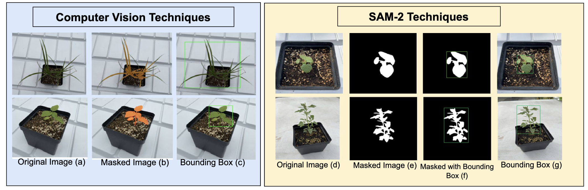
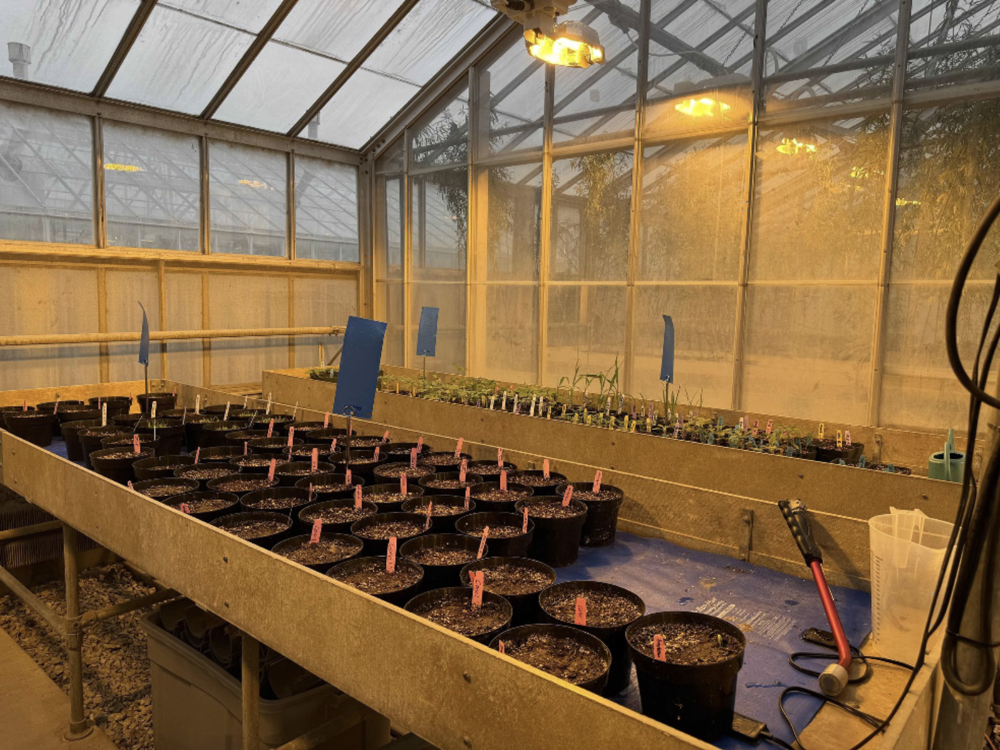
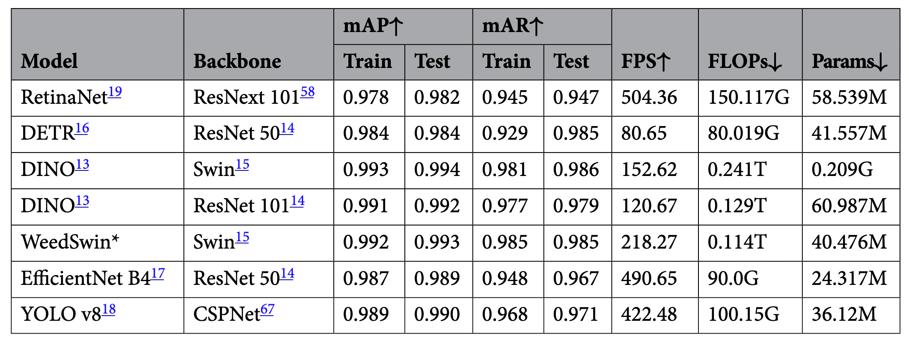
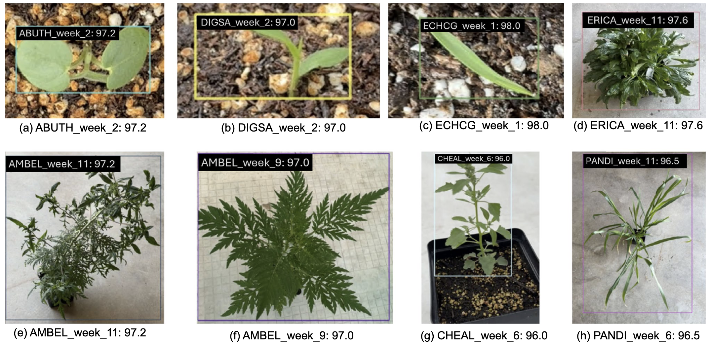
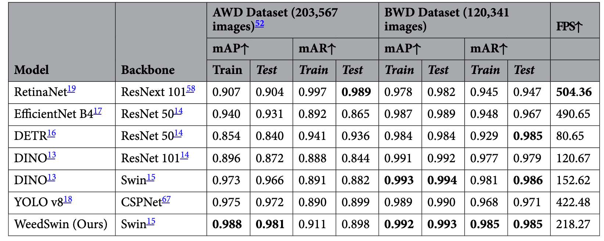
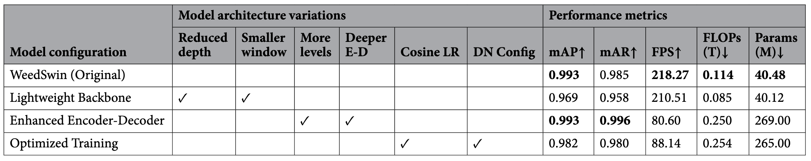

Highlights
Weed detection and classification using computer vision and deep learning techniques have emerged as crucial tools for precision agriculture, offering automated solutions for sustainable farming practices. This study presents a comprehensive approach to weed identification across multiple growth stages, addressing the challenges of detecting and classifying diverse weed species throughout their developmental cycles. We introduce WeedSwin, a novel hierarchical vision transformer architecture specifically designed to address the unique challenges of weed detection, such as complex morphological variations and overlapping vegetation patterns.
Key Achievements:
- 📊 Outstanding Performance: WeedSwin achieved 0.993 ± 0.004 mAP and 0.985 mAR while maintaining practical processing speeds of 218.27 FPS
- 📦 Comprehensive Datasets: Two extensive datasets - Alpha Weed Dataset (AWD) with 203,567 images and Beta Weed Dataset (BWD) with 120,341 images
- 🌱 Multi-stage Coverage: Documenting 16 prevalent weed species across 11 growth stages
- 🔬 Advanced Preprocessing: Datasets preprocessed using both traditional computer vision techniques and the advanced SAM-2 model
- 🏆 Competitive Evaluation: Outperformed DINO Transformer, DETR, EfficientNet B4, YOLO v8, and RetinaNet across various metrics
🏗️ WeedSwin Architecture
WeedSwin Hierarchical Architecture: The novel architecture combines hierarchical vision transformer blocks with spatial attention mechanisms for multi-scale feature extraction. The model processes input images through multiple stages, capturing both fine-grained local features and global contextual information essential for accurate weed detection across different growth stages and environmental conditions.
🎯 Motivation & Challenges
Weed management has become increasingly critical in modern agriculture, particularly in the diverse agricultural regions of the United States. The challenge of weed invasion extends beyond immediate crop competition, affecting agricultural productivity, economic stability, and ecosystem balance.
🔍 Key Challenges Addressed:
- 📈 Multi-Stage Growth Detection: Identifying weeds across 11 different growth stages from seedling to maturity
- 🌿 Species Diversity: Distinguishing between 16 prevalent weed species with complex morphological variations
- 🔄 Temporal Dynamics: Handling overlapping vegetation patterns and developmental cycles
- ⚡ Real-time Performance: Achieving 218.27 FPS for practical field deployment
- 🎯 Precision Requirements: Detecting challenging "driver weeds" that significantly impact agricultural productivity
WeedSwin Innovation: Our approach uniquely adapts hierarchical vision transformers with SAM-2 preprocessing to create a robust, scalable solution that outperforms existing architectures while maintaining practical processing speeds.
🤖 SAM-2 Integration
SAM-2 Integration: Advanced preprocessing using SAM-2 for high-quality annotations with segmentation masks and precise bounding boxes. This innovative approach enhances the dataset quality by providing accurate pixel-level annotations, enabling the WeedSwin model to learn fine-grained features essential for multi-stage weed detection and classification across diverse agricultural environments.
🌱 Dataset & Experimental Setup
🏠 Greenhouse Environment
Controlled Greenhouse Environment: The systematic cultivation setup used for growing and documenting 16 weed species across their complete 11-week lifecycle. This controlled environment ensures consistent conditions for accurate temporal data collection, enabling precise tracking of morphological changes and growth patterns essential for developing robust detection models.
📊 Growth Stage Dataset

Growth Stage Examples: Representative weed species across 11-week lifecycle. (a,b) AMAPA at week 1 and 11; (c,d) SIDSP at week 1 and 11; (e,f) AMATU at week 1 and 11; (g,h) SETPU at week 1 and 11. These examples illustrate the dramatic morphological changes in plant structure, size, and complexity that the WeedSwin model must accurately detect and classify.
📊 Experimental Results & Analysis
🏆 Main Performance Results
Outstanding Performance Metrics: WeedSwin demonstrates superior performance with 0.993 ± 0.004 mAP and 0.985 mAR scores, significantly outperforming DINO Transformer (ResNet-101 and Swin backbones), DETR, EfficientNet B4, YOLO v8, and RetinaNet across various evaluation metrics. The model maintains exceptional inference speed of 218.27 FPS, making it highly suitable for real-time agricultural applications.
🎯 Detection & Classification Examples
Multi-Stage Weed Detection: Qualitative results demonstrate WeedSwin's capability to accurately detect and classify 16 weed species across their 11 growth stages. The examples showcase the model's robustness in handling complex morphological variations, overlapping vegetation patterns, and different environmental conditions, particularly excelling in detecting challenging "driver weeds" that significantly impact agricultural productivity.
📈 Comparative Analysis
Comprehensive Benchmark Comparison: Detailed performance analysis against state-of-the-art object detection architectures including DINO Transformer with ResNet-101 and Swin backbones, Detection Transformer (DETR), EfficientNet B4, YOLO v8, and RetinaNet. The comparison reveals WeedSwin's consistent superiority across different growth stages, with particularly notable improvements in detecting early-stage weeds and handling temporal dynamics throughout the growing season.
🔬 Ablation Study Analysis
Component-wise Architecture Analysis: Systematic ablation study revealing the contribution of each WeedSwin component to the overall performance. The analysis demonstrates the effectiveness of the hierarchical transformer design, the impact of SAM-2 preprocessing, and the importance of multi-scale feature extraction in achieving state-of-the-art results. Results show improved accuracy as plants mature, validating the robustness of the temporal modeling approach.
🚀 Key Contributions & Impact
🔬 Technical Innovations:
- 🏗️ Novel WeedSwin Architecture: First hierarchical vision transformer specifically designed for multi-stage weed detection and classification
- 🤖 SAM-2 Integration: Advanced preprocessing pipeline using SAM-2 for high-quality annotations with precise segmentation masks
- 📊 Comprehensive Datasets: Two extensive datasets (AWD: 203,567 images, BWD: 120,341 images) covering 16 weed species across 11 growth stages
- ⚡ Performance Excellence: Achieved 0.993 ± 0.004 mAP and 0.985 mAR with 218.27 FPS processing speed
🌍 Practical Impact:
- 🎯 Real-time Deployment: Fast inference suitable for practical agricultural automation systems
- 🌱 Multi-stage Capability: Robust detection across complete weed developmental cycles from seedling to maturity
- 🏆 State-of-the-art Results: Outperformed DINO, DETR, EfficientNet B4, YOLO v8, and RetinaNet architectures
- 🌿 Sustainable Agriculture: Enables precision weed management for reduced herbicide usage and environmental impact
🎯 Research Significance
This research establishes a foundation for more efficient and environmentally sustainable weed management practices. The demonstrated success of the WeedSwin architecture, combined with extensive temporal datasets, represents a significant advancement in agricultural computer vision, supporting the evolution of precision farming techniques while promoting reduced herbicide usage and improved crop management efficiency.
📝 Citation
If you find WeedSwin useful in your research, please consider citing our paper:
@article{islam2025weedswin,
title={WeedSwin hierarchical vision transformer with SAM-2 for multi-stage weed detection and classification},
author={Islam, Taminul and Sarker, Toqi Tahamid and Ahmed, Khaled R and Rankrape, Cristiana Bernardi and Gage, Karla},
journal={Scientific Reports},
volume={15},
number={1},
pages={23274},
year={2025},
publisher={Nature Publishing Group UK London}
}
📖 Paper: Scientific Reports (Nature) - Volume 15, Article 23274 (2025)
🔗 DOI: 10.1038/s41598-025-05092-z
📋 Conference Poster
🌿 WeedVision: Early Project Development
This poster presents the early development of our weed detection research, initially called "WeedVision," which evolved into the comprehensive WeedSwin project. The poster showcases the foundational work that led to our current state-of-the-art approach.

WeedVision poster presented at academic conference showcasing the preliminary research that evolved into the WeedSwin project